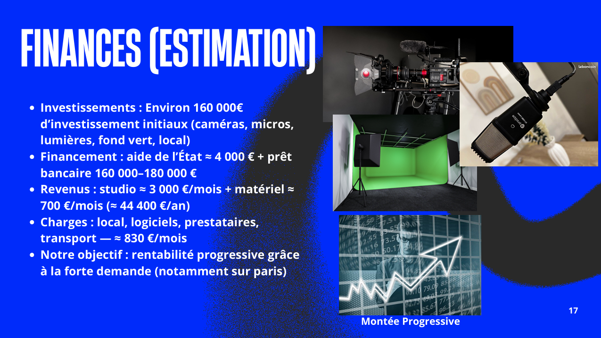
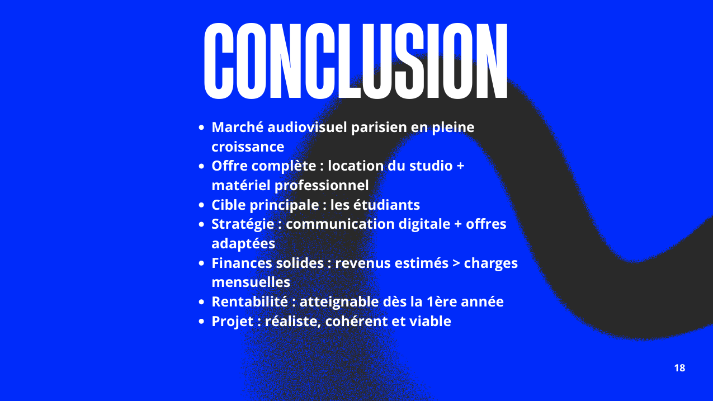

Étude financière
Cette diapositive présente les principales estimations financières du projet : investissements initiaux, sources de financement, revenus prévisionnels, charges mensuelles et objectif de rentabilité progressive.
AC35.03
Projet d’entrepreneuriat
Ce projet de groupe consistait à imaginer une entreprise de location de matériel audiovisuel et de studio destinée principalement aux étudiants. Ma contribution a porté sur l’étude financière du projet ainsi que sur la synthèse finale présentée à l’oral.
Création d’un service de location audiovisuelle pour les étudiants.
Estimation des investissements, revenus, charges et rentabilité.
Diaporama utilisé dans le cadre d’une présentation orale en groupe.

Cette diapositive présente les principales estimations financières du projet : investissements initiaux, sources de financement, revenus prévisionnels, charges mensuelles et objectif de rentabilité progressive.

Cette diapositive synthétise la faisabilité globale du projet. Elle permet de rappeler le besoin identifié, la cible principale, la stratégie envisagée et la viabilité économique de l’entreprise imaginée.
Cliquez sur une diapositive pour voir les détails.
Ma contribution a principalement porté sur l’étude financière du projet, notamment l’estimation des investissements initiaux, des sources de financement, des revenus potentiels, des charges et des perspectives de rentabilité. J’ai également participé à la synthèse du projet à travers la rédaction de la conclusion finale.
Cette réalisation montre ma capacité à participer à la conception d’un projet entrepreneurial en prenant en compte sa viabilité économique. Elle illustre également ma capacité à formuler une synthèse claire afin de présenter les forces et la cohérence d’un projet devant un public.
Ce projet m’a permis de mieux comprendre l’importance de l’étude financière dans la création d’une entreprise. Même si certaines estimations restent perfectibles, ce travail m’a aidé à prendre du recul sur la faisabilité d’un projet et sur la nécessité de construire une proposition cohérente, réaliste et économiquement viable.